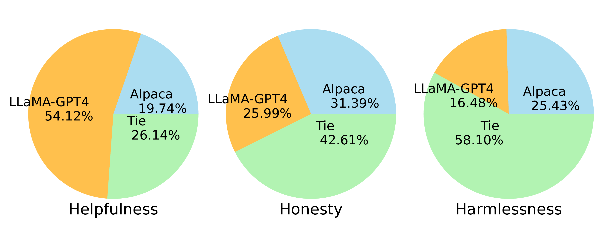
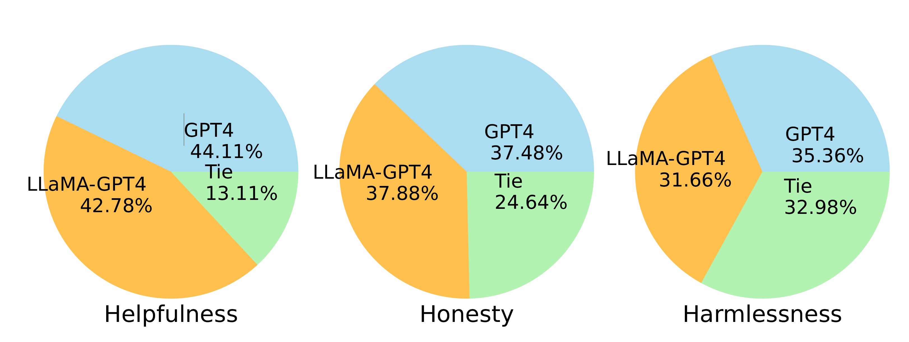
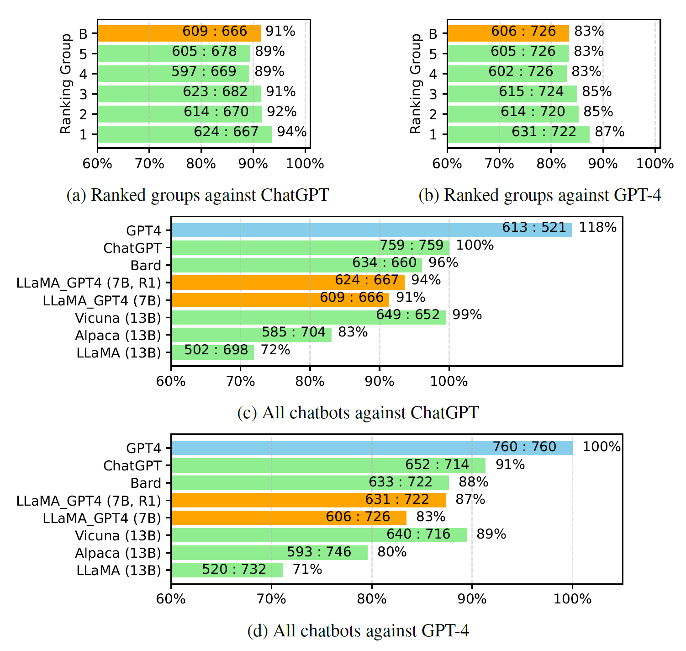
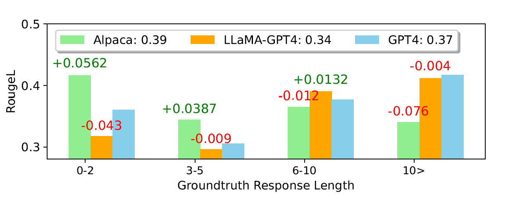

GPT-4-LLM (generated by GLIGEN)
Large Language Models (LLMs) have shown impressive generalization capabilities such as in- context-learning and chain-of-thoughts reasoning. To enable LLMs to follow natural language instructions and complete real-world tasks, researchers have been exploring methods of instruction-tuning of LLMs. To advance the state of the art of instruction-tuning for LLMs, we present the first attempt to use GPT-4 to generate instruction-following data for LLM finetuning.
GPT-4 Data
In particular, we release the following data assets:- English Instruction-Following Data: for the 52K instructions collected in Alpaca, one English GPT-4 answer is provided for each.
- Chinese Instruction-Following Data: we use ChatGPT to translate the 52K instructions into Chinese and ask GPT-4 to answer them in Chinese.
- Comparison Data: we ask GPT-4 to rate its own response from 1 to 10. Furthermore, we ask GPT-4 to compare and rate the responses from the three models, including GPT-4, GPT-3.5 and OPT-IML. This is used to train reward models.
- Answers on Unnatural Instructions: the GPT-4 answers are decoded on the core dataset of 68K instruction-input-output triplets. The subset is used to quantify the gap between GPT-4 and our instruction-tuned models at scale.
How Good is The Data?
Evaluating the performance of self-instruct tuned models on GPT-4 data for tasks that have not been seen before remains a difficult task. Our objective is to assess their capability to comprehend and follow instructions for various tasks. To accomplish this, we utilize the following three types of evaluations.Our empirical investigation confirms that the utilization of GPT-4-generated data is an efficient and effective approach for LLM instruction-tuning than other machine generated data.Human evaluation was performed on model generation results using Amazon Mechanical Turk following Helpfulness, Honestness and Harmlessness criteria. The results are summarized as follows:
- Two instruction-tuned LLaMA models were compared, fine-tuned on data generated by GPT-4 and GPT-3 respectively.
- LLaMA-GPT-4 performs substantially better than LLaMA-GPT-3 in the "Helpfulness" criterion.
- LLaMA-GPT-4 performs similarly to the original GPT-4 in all three criteria, suggesting a promising direction for developing state-of-the-art instruction-following LLMs.

LLaMA-GPT4 vs Alpaca (i.e., LLaMA-GPT3)

LLaMA-GPT4 vs GPT-4
GPT-4 was used to evaluate the quality of responses generated by different chatbot models on 80 unseen questions. The responses from LLaMA-GPT-4 (7B) and GPT-4 were collected, and the release answers from other models were obtained from a previous study. GPT-4 was asked to rate the quality of responses between two models using a scale of 1 to 10, and the results were compared against a strong competing model (ChatGPT and GPT-4).
- The evaluation showed that the feedback data and reward model were effective in improving the performance of LLaMA.
- LLaMA-GPT-4 outperformed LLaMA and Alpaca, but there was still a performance gap with large commercial chatbots like GPT-4.
- The findings demonstrate the potential of instruction-tuning to enhance the performance of AI chatbots.

Evaluations Scores from GPT-4
- Alpaca outperforms LLaMA-GPT4 and GPT-4 in terms of average ROUGE-L scores.
- LLaMA-GPT4 and GPT-4 gradually perform better than Alpaca when the ground truth response length increases.
- LLaMA-GPT4 can closely follow the behavior of GPT-4 across different subsets.
- LLaMA-GPT4 and GPT-4 tend to generate responses that contain simple ground truth answers but add extra words to make the response more chat-like, which may lead to lower ROUGE-L scores.

ROUGE-L on Unnatural Instructions.
Citation
If the paper inspires you and the data is used in your research, please cite us:@article{peng2023gpt4llm,
title={Instruction Tuning with GPT-4},
author={Baolin Peng, Chunyuan Li, Pengcheng He, Michel Galley, Jianfeng Gao},
journal={arXiv preprint arXiv:},
year={2023}
}
Release and License
The data is intended solely for research and non-commercial purposes. Its use is subject to the Terms of Use for data generated by OpenAI. If you discover any potential violations, please contact us. Additionally, the code is governed by the Apache License 2.0.The Team
Baolin Peng*, Chunyuan Li*, Pengcheng He*, Michel Galley, Jianfeng Gao* Equal contribution